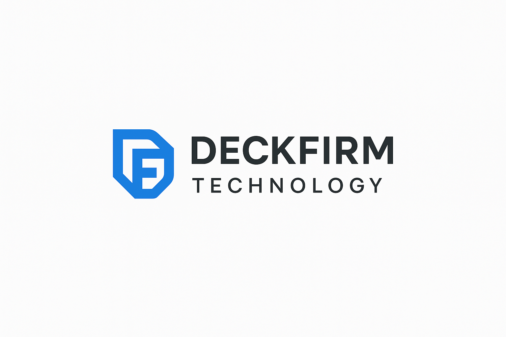

Projects – Homelab
Proxmox Virtual Lab
Simulated enterprise environment using pfSense, Nessus, Windows Server, and Kali Linux.
Read More →Wazuh CVE-2025-29824 Detection
How I detected and mitigated a Windows CLFS privilege escalation using Wazuh SIEM.
Read More →Blogs
CVE-2025-29824: Remediation
Technical steps to detect, triage, and mitigate a live security threat in a homelab.
Read More →Smart People Need Smart Managers
Why highly skilled employees often struggle under poor leadership – and what to do.
Read More →Career
Deckfirm Technologies
 Read More →Education, Skills and Certifications
Middlesex University, Nairobi — BSc. Business Information Technology (2017)
This course combined business fundamentals with hands-on IT skills like database design, networking, software development, and systems management.
Skills
- PC Repair | Network Troubleshooting | Hypervisors
- SIEM/XDR | Firewall Management | Ethical Hacking
Certifications
- CompTIA A+, N+, Security+
- Linux Essentials, CCNA, DEVNET, CyberOps Associate